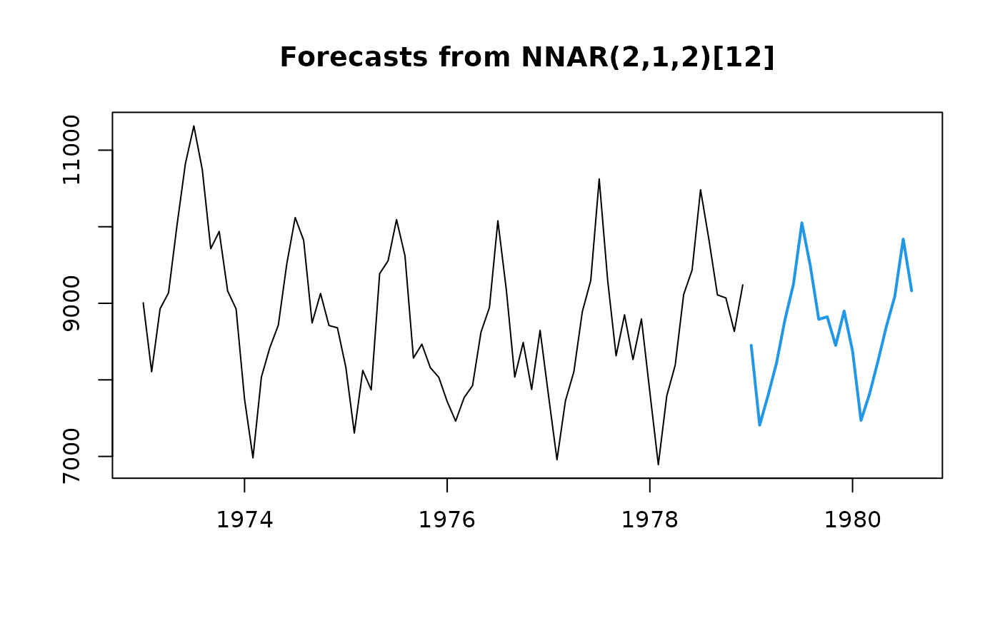

Returns forecasts and other information for univariate neural network models.
# S3 method for nnetar forecast( object, h = ifelse(object$m > 1, 2 * object$m, 10), PI = FALSE, level = c(80, 95), fan = FALSE, xreg = NULL, lambda = object$lambda, bootstrap = FALSE, npaths = 1000, innov = NULL, ... )
| object | An object of class " |
|---|---|
| h | Number of periods for forecasting. If |
| PI | If TRUE, prediction intervals are produced, otherwise only point
forecasts are calculated. If |
| level | Confidence level for prediction intervals. |
| fan | If |
| xreg | Future values of external regressor variables. |
| lambda | Box-Cox transformation parameter. If |
| bootstrap | If |
| npaths | Number of sample paths used in computing simulated prediction intervals. |
| innov | Values to use as innovations for prediction intervals. Must be
a matrix with |
| ... | Additional arguments passed to |
An object of class "forecast".
The function summary is used to obtain and print a summary of the
results, while the function plot produces a plot of the forecasts and
prediction intervals.
The generic accessor functions fitted.values and residuals
extract useful features of the value returned by forecast.nnetar.
An object of class "forecast" is a list containing at least the
following elements:
A list containing information about the fitted model
The name of the forecasting method as a character string
Point forecasts as a time series
Lower limits for prediction intervals
Upper limits for prediction intervals
The confidence values associated with the prediction intervals
The original time series (either object itself or the time series
used to create the model stored as object).
The external regressors used in fitting (if given).
Residuals from the fitted model. That is x minus fitted values.
Fitted values (one-step forecasts)
Other arguments
Prediction intervals are calculated through simulations and can be slow. Note that if the network is too complex and overfits the data, the residuals can be arbitrarily small; if used for prediction interval calculations, they could lead to misleadingly small values. It is possible to use out-of-sample residuals to ameliorate this, see examples.
Rob J Hyndman and Gabriel Caceres
if (FALSE) { ## Include prediction intervals in forecast fcast2 <- forecast(fit, h=20, PI=TRUE, npaths=100) plot(fcast2) ## Set up out-of-sample innovations using cross-validation fit_cv <- CVar(USAccDeaths, size=2) res_sd <- sd(fit_cv$residuals, na.rm=TRUE) myinnovs <- rnorm(20*100, mean=0, sd=res_sd) ## Forecast using new innovations fcast3 <- forecast(fit, h=20, PI=TRUE, npaths=100, innov=myinnovs) plot(fcast3) }